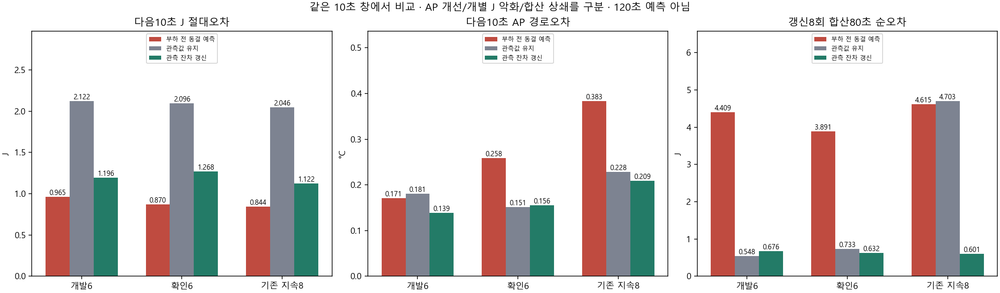
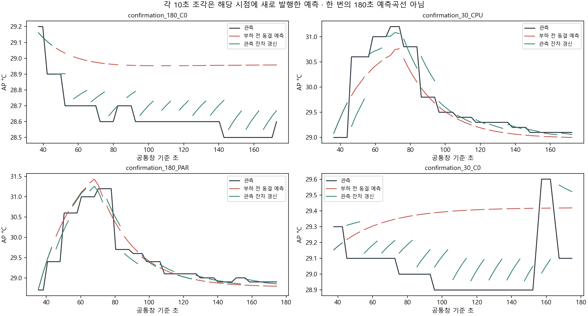

AP after_ns와전력기록시점이발행시점이전인표본만입력. host전달지연·센서내부갱신보장·앱numeric AP경로는실기기미확인. 에너지J35..115초8창, AP35..175초14창. 같은겹치지않는10초창에서세션평균을비교한다.
범위·재현 · 840행 전체창 · 20세션별오차·악화 · 합산상쇄
| 자료 | 역할 | 방식 | 세션 | 10초 J MAE | 10초 AP MAE | J 악화 | AP 악화 |
|---|---|---|---|---|---|---|---|
| history | development | FROZEN_OPEN_LOOP | 6 | 0.9647024932944134 | 0.17085679855380634 | 0 | 0 |
| history | development | OBSERVATION_PERSISTENCE | 6 | 2.1221723083136355 | 0.18105158730158735 | 6 | 2 |
| history | development | ROLLING_OFFSET | 6 | 1.1964179588894952 | 0.13906957439970402 | 4 | 1 |
| history | confirmation | FROZEN_OPEN_LOOP | 6 | 0.869569856376707 | 0.2583134538451797 | 0 | 0 |
| history | confirmation | OBSERVATION_PERSISTENCE | 6 | 2.0959101045780524 | 0.15128968253968259 | 6 | 2 |
| history | confirmation | ROLLING_OFFSET | 6 | 1.2677452677971426 | 0.15576735339660733 | 6 | 0 |
| sustained | evaluation | FROZEN_OPEN_LOOP | 8 | 0.8437052997823997 | 0.38327427100418077 | 0 | 0 |
| sustained | evaluation | OBSERVATION_PERSISTENCE | 8 | 2.0463963917619967 | 0.22805059523809518 | 8 | 1 |
| sustained | evaluation | ROLLING_OFFSET | 8 | 1.1221723394134702 | 0.2090497687930925 | 7 | 0 |

